مقدمة
تُعد الواجهات الزجاجية من أبرز عناصر التصميم المعماري الحديث، حيث تضفي مظهرًا أنيقًا وعصريًا على المباني السكنية والتجارية والإدارية. ومع ذلك، فإن تعرضها المستمر للأتربة، والغبار، وآثار الأمطار، والعوامل الجوية يجعلها تحتاج إلى عناية دورية للحفاظ على صفائها ولمعانها. وفي مدينة الرياض، حيث تزداد نسبة الأتربة والغبار خلال فترات مختلفة من العام، تصبح خدمة تنظيف الواجهات الزجاجية بالرياض من الخدمات الأساسية للمحافظة على المظهر الخارجي للمباني.
لماذا تحتاج الواجهات الزجاجية إلى تنظيف دوري؟
تتعرض الواجهات الزجاجية بشكل مباشر للعوامل الخارجية، مما يؤدي إلى تراكم الأتربة وآثار المياه والبقع مع مرور الوقت. ومن أهم فوائد التنظيف الدوري: المحافظة على شفافية الزجاج، تحسين المظهر الخارجي للمبنى، إزالة الأتربة والغبار، إزالة آثار المياه، المحافظة على الإطارات، تحسين دخول الإضاءة الطبيعية، المساعدة في إطالة العمر الافتراضي للواجهات.
أهمية الاستعانة بشركة تنظيف واجهات زجاج بالرياض
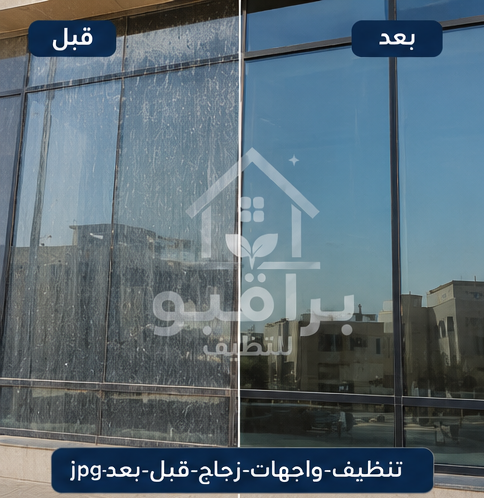
قبل وبعد التنظيف
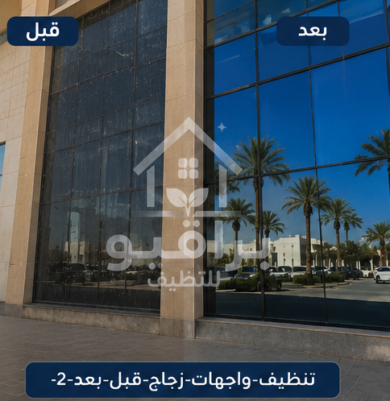
قبل وبعد التنظيف
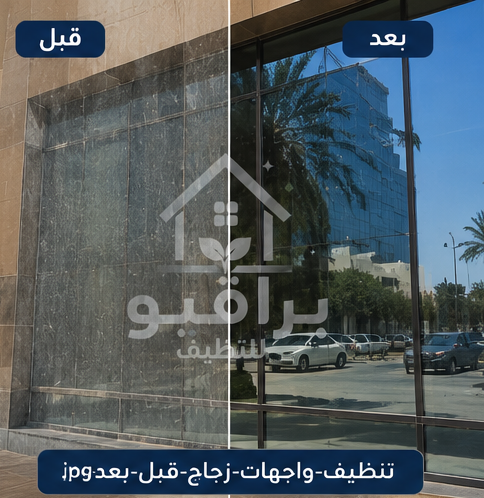
قبل وبعد التنظيف
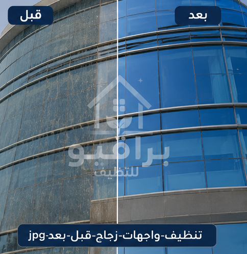
قبل وبعد التنظيف

قبل وبعد التنظيف
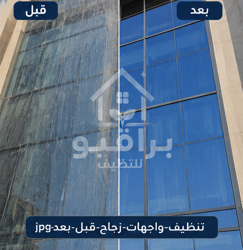
قبل وبعد التنظيف
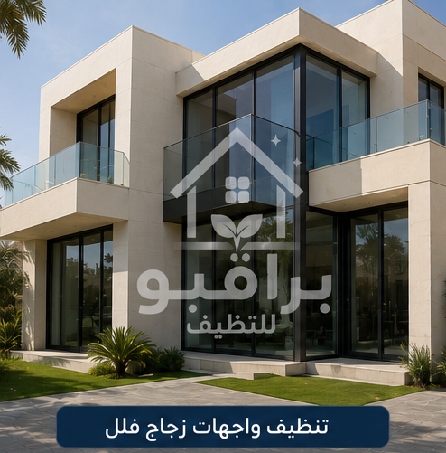
تنظيف الأبراج
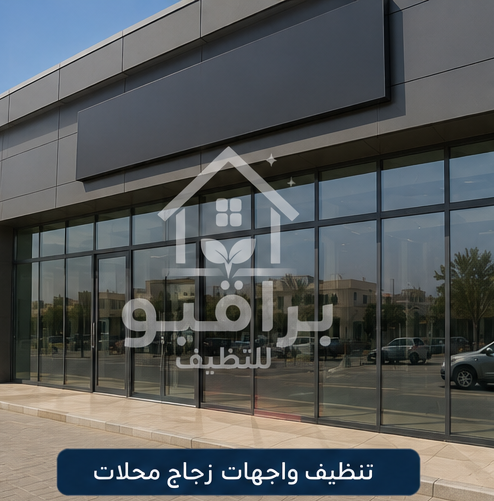
تنظيف المحلات
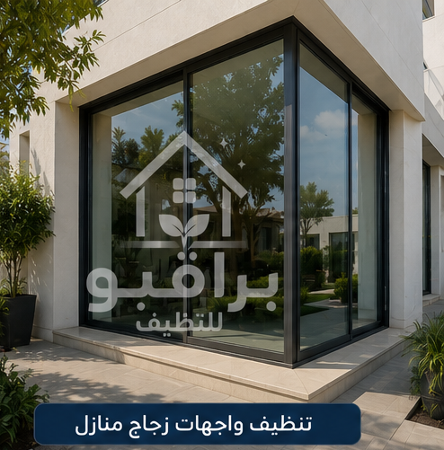
تنظيف المنازل
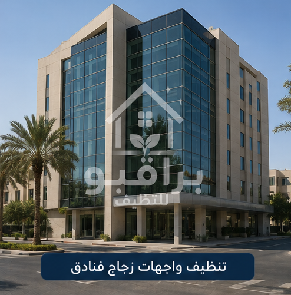
تنظيف الفنادق
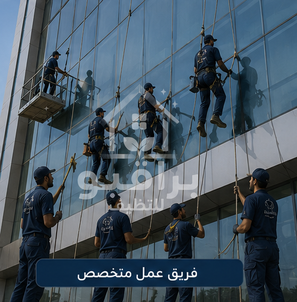
فريق العمل
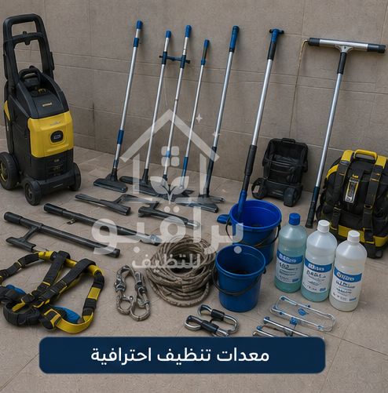
المعدات
قد يكون تنظيف الواجهات المرتفعة أو الكبيرة أمرًا صعبًا باستخدام الطرق التقليدية، لذلك فإن الاستعانة بشركة متخصصة تساعد على تنفيذ العمل بطريقة احترافية مع مراعاة متطلبات السلامة. وتتميز الخدمة بـ: تنظيف الواجهات الزجاجية الخارجية، تنظيف الواجهات الداخلية، إزالة الغبار والبقع، تنظيف الإطارات، تنظيف النوافذ الزجاجية، تنظيف الواجهات المرتفعة، توفير الوقت والجهد.
خدمات تنظيف الواجهات الزجاجية بالرياض
- تنظيف الواجهات الزجاجية.
- تنظيف زجاج المباني.
- تنظيف النوافذ الخارجية.
- تنظيف النوافذ الداخلية.
- تنظيف واجهات الفلل.
- تنظيف واجهات الأبراج.
- تنظيف واجهات الشركات.
- تنظيف واجهات الفنادق.
- تنظيف واجهات المحلات التجارية.
- تنظيف واجهات المولات.
- إزالة الغبار.
- إزالة آثار المياه.
- تنظيف الإطارات.
- تنظيف الكلادينج.
🏢 واجهة مبناك محتاجة تنظيف؟
📱 احجز موعد الآنأنواع الواجهات التي نقوم بتنظيفها
- الواجهات الزجاجية.
- واجهات الكلادينج.
- واجهات الألمنيوم.
- واجهات المحلات التجارية.
- واجهات الأبراج.
- واجهات الشركات.
- واجهات الفلل.
- واجهات القصور.
- واجهات الفنادق.
- واجهات المستشفيات.
- واجهات المدارس.
- واجهات الجامعات.
- واجهات المولات.
متى تحتاج الواجهة الزجاجية إلى تنظيف احترافي؟
- تراكم الغبار والأتربة بشكل واضح.
- ظهور بقع وآثار مياه على الزجاج.
- انخفاض شفافية الواجهة.
- تراكم الأوساخ حول الإطارات.
- صعوبة تنظيف الأجزاء المرتفعة.
- مرور فترة طويلة منذ آخر عملية تنظيف.
تنظيف واجهات الفلل
الفلل الحديثة تعتمد بشكل كبير على الواجهات الزجاجية والنوافذ الكبيرة، لذلك تحتاج إلى تنظيف احترافي يحافظ على المظهر الفاخر للمبنى. تشمل الخدمة: تنظيف الواجهات الزجاجية، تنظيف النوافذ الخارجية، تنظيف النوافذ الداخلية، تنظيف الإطارات، إزالة الغبار، إزالة آثار المياه، تنظيف الأبواب الزجاجية.
تنظيف واجهات الأبراج
تحتاج الأبراج إلى معدات وتقنيات خاصة للوصول إلى الواجهات المرتفعة، ولذلك يتم تنفيذ العمل وفق إجراءات دقيقة تراعي السلامة وجودة التنفيذ. تشمل الخدمة: تنظيف الواجهات الخارجية، تنظيف الزجاج المرتفع، تنظيف الفواصل، تنظيف الإطارات، إزالة الأتربة، إزالة آثار الأمطار.
تنظيف واجهات الشركات
واجهة الشركة هي أول ما يراه العميل، لذلك فإن نظافتها تعكس مستوى الاحترافية والاهتمام بالتفاصيل. تشمل الخدمة: تنظيف المداخل الزجاجية، تنظيف النوافذ، تنظيف الواجهات الخارجية، تنظيف الإطارات، إزالة البقع، تنظيف الزجاج الداخلي.
✨ واجهة شركتك تعكس صورتك
📱 تواصل معنا واتسابتنظيف الواجهات الزجاجية المرتفعة
تحتاج المباني المرتفعة إلى طرق تنظيف تختلف عن المباني العادية، وذلك بسبب الارتفاع وصعوبة الوصول إلى بعض الأجزاء. تشمل الخدمة: تنظيف الواجهات الزجاجية المرتفعة، تنظيف الأبراج الزجاجية، تنظيف النوافذ الخارجية، تنظيف الواجهات متعددة الطوابق، إزالة الأتربة وآثار الأمطار، تنظيف الإطارات والفواصل.
تنظيف واجهات المولات والمراكز التجارية
الواجهات الزجاجية في المولات والمحلات التجارية تُعد عنصرًا مهمًا في جذب العملاء. تشمل الخدمة: تنظيف واجهات العرض، تنظيف الأبواب الزجاجية، تنظيف النوافذ الكبيرة، إزالة آثار اللمس، إزالة الغبار، تنظيف الإطارات.
خدمات تنظيف الواجهات الزجاجية في جميع أحياء الرياض
تقدم براقيو خدمات تنظيف الواجهات الزجاجية بالرياض لجميع العملاء في مختلف أحياء مدينة الرياض: حي النرجس، حي الياسمين، حي الملقا، حي العارض، حي حطين، حي الصحافة، حي الربيع، حي الملك فهد، حي العليا، حي السليمانية، حي قرطبة، حي المونسية، حي الرمال، حي القادسية، حي اليرموك، حي الروضة، حي الخليج، حي النسيم، حي الشفا، حي السويدي، حي بدر، حي العزيزية، حي ظهرة لبن، حي الدار البيضاء.
الأسئلة الشائعة
هل يمكن تنظيف الواجهات المرتفعة؟
نعم، يتم تنظيف الواجهات المرتفعة باستخدام المعدات أو الوسائل المناسبة لطبيعة المبنى.
هل تشمل الخدمة تنظيف الإطارات؟
نعم، يتم تنظيف الإطارات والفواصل إلى جانب الزجاج ضمن نطاق الخدمة.
كم مرة يُنصح بتنظيف الواجهات؟
يعتمد ذلك على موقع المبنى ومدى تعرضه للغبار، لكن يُنصح بإجراء تنظيف دوري للحفاظ على المظهر العام.
فريق عمل مدرب
عمالة محترفة ومدربة على أعلى مستوى
مواد آمنة
منتجات تنظيف مناسبة لجميع أنواع الزجاج
سرعة في الإنجاز
خدمة سريعة مع الالتزام بالمواعيد
ضمان الجودة
نتائج احترافية تدوم طويلاً
براقيو لخدمات تنظيف الواجهات الزجاجية بالرياض
إذا كنت تبحث عن أفضل شركة تنظيف واجهات زجاجية بالرياض تقدم خدمات احترافية للمنازل والفلل والأبراج والشركات والفنادق، فإن براقيو توفر حلولًا متكاملة لتنظيف جميع أنواع الواجهات الزجاجية. ندرك أن الواجهة الزجاجية هي أول ما يلفت الانتباه في أي مبنى، لذلك نحرص على تنظيف الزجاج والإطارات والفواصل والنوافذ والأبواب الزجاجية بعناية.
نصائح للحفاظ على لمعان الواجهات الزجاجية
- تنظيف الواجهة بصورة دورية.
- إزالة الغبار أولًا بأول.
- عدم استخدام أدوات خشنة.
- تجفيف الزجاج بعد التنظيف.
- الاهتمام بتنظيف الإطارات.
- الاستعانة بشركة متخصصة للواجهات المرتفعة.
خاتمة
تُعد الواجهات الزجاجية عنصرًا أساسيًا في إبراز جمال المباني الحديثة، إلا أنها تحتاج إلى تنظيف دوري للحفاظ على صفائها ومظهرها الأنيق، خاصة في مدينة الرياض التي تتعرض فيها المباني للأتربة والغبار بشكل مستمر. إذا كنت تبحث عن شركة متخصصة في تنظيف الواجهات الزجاجية بالرياض، فإن فريق براقيو جاهز لخدمتك في جميع أحياء مدينة الرياض.
نقدم خدمة تنظيف المكيفات في جميع أحياء الرياض: حي النرجس، حي الياسمين، حي الملقا، حي العارض، حي حطين، حي الصحافة، حي الربيع، حي الغدير، حي العقيق، حي المروج، حي الورود، حي النفل، حي الندى، حي الفلاح، حي التعاون، حي الازدهار، حي قرطبة، حي الرمال، حي المونسية، حي القادسية، حي اليرموك، حي الخليج، حي الروضة، حي إشبيلية، حي الجزيرة، حي النهضة، حي الحمراء، حي غرناطة، حي الريان، حي الربوة، حي القدس، حي الروابي، حي السويدي، حي ظهرة لبن، حي لبن، حي طويق، حي العريجاء، حي البديعة، حي شبرا، حي سلطانة، حي الشفا، حي بدر، حي العزيزية، حي الدار البيضاء، حي المنصور، حي الحزم، حي نمار، حي أحد، حي عكاظ، حي المروة، حي العليا، حي السليمانية، حي الملز، حي الفوطة، حي المربع، حي البطحاء، حي الديرة، حي السفارات.